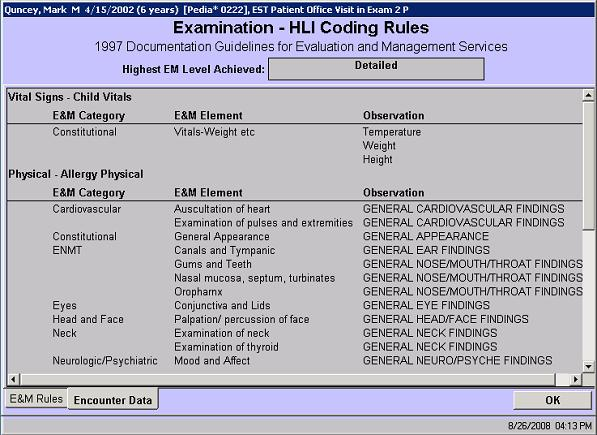

| Solution: |
In this solution...
|
| Details: |
Description The Coding Rules/Encounter Data screen allows a user to review in detail what items were counted towards the E & M encounter level for a particular encounter. This screen is available from the E & M Coding Levels screen and can be displayed for each Item/Type and Level Achieved. Us this screen in conjunction with the E & M Coding Rules screen when trying to determine why an encounter is coding too high or too low. The E & M Coding Rules screen will display the rule used to calcaluate the level for one of the three categories: History, Examination, and Decision Making. If that information is not specific enough, this screen can be displayed for individual items/types within the category to see specifics on what was counted. For the item/type chosen, this screen displays the E & M Category and E & M Element for the specific observations documented. This can tell the user one of two things:
IMPORTANT: EncounterPRO calculates a suggested visit level based on the amount of information that was documented during the encounter. The system can only measure the work done, it cannot evaluate the necessity of the work. Ultimately it is the encounter owner or provider, not encounterPRO who is responsible for the E & M levels chosen. The system merely offers a suggested level based on the observations recorded, and gives the provider the option to view the reasons that this level is suggested, but it is he or she who chooses the encounter level that is approved and sent to billing
How to Access This Screen
Screen Example 
Related Solutions |
| Symptoms: |
| ID: 040827511382639 | Last Modified: 10/10/2008 11:52:51 AM |